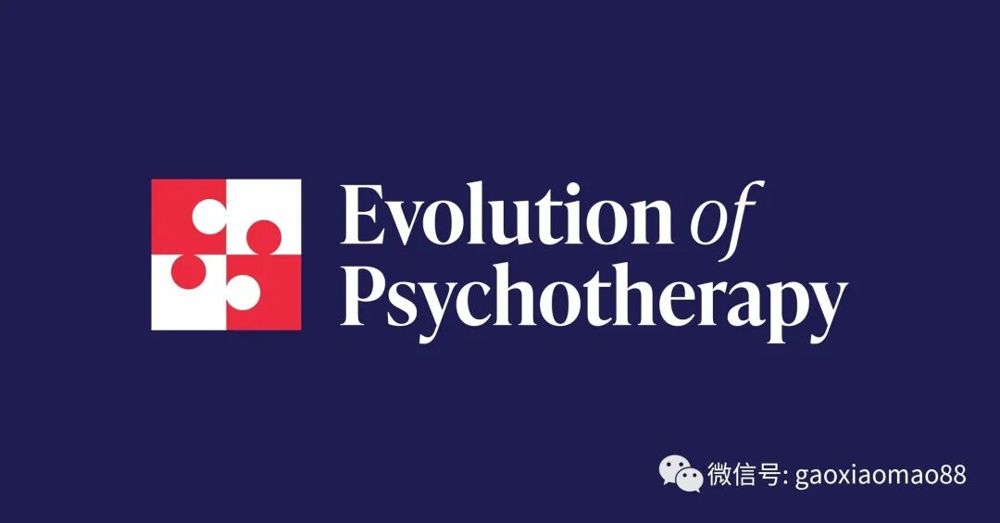
几个月前去参加了Trance camp，当时的一个同学给我推荐了这个conference。
她说这个conference除了trance流派的老师，还有很多别的流派的心理治疗的专家都会来。我会有机会学到别的流派的很多东西。
于是我就报名了，会议是12/12-12/17。以下是这几天的见闻。
Masters of Psychotherapy
这个是12/12由Jeffery Zeig讲的。Zeig是这个conference的founder。
在talk里他review了好几位在这个领域的大师的一些治疗录像片段。比如Milton Erickson，Virginia Satir，Salvador Minuchin的录像。
我的感觉上，Erickson当然是最为独特的。在Zeig的录像片段里，他是一个瘦小的老人，眼睛炯炯有神。
而Satir则很喜欢让被咨询对象站起来，互相做肢体的接触。她为了讲解一对父母与孩子的关系的时候，让他们互相之间靠得很近很近，问他们的感受。然后再让他们后退一步，再次感受。她用这样的方式来让咨询对象直观地感受到他们当前关系的现状。
Minuchin则喜欢调换被咨询对象的位置，然后提出一些尖锐的问题，激发对象的讨论。
还有一个人的片段，名字我忘记了。他的方式是不断质疑对方的逻辑。录像里的被咨询对象是一个女生，她说她和她的supervisor总是不对付，她总是觉得她的上级不称职，因此她就会很容易觉得被不公正地对待了。咨询师就反复问她，到底是你自己觉得被不公正对待了，还是他们真的对你有具体做什么吗？到底是你自己的感觉，还是对方做了什么。
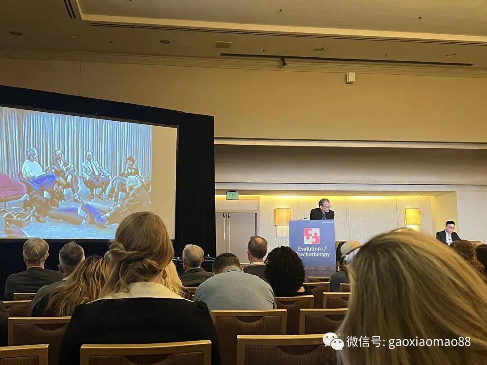
Daniel G Amen：一切心理疾病都是大脑受损的结果
这个是我在12/13听的一场。这人认为我们的心理疾病其实都来自于大脑的病态结构。他的lab有一种扫描手段，可以扫描人的大脑形态。根据这个形态，他们可以得到一个人的大脑健康状况。
对于adhd（多动症），autism（自闭症），bipolar，阿尔兹海默症等等症状，根据他们的扫描结果，都有很大的结构问题。而一旦可以让这样的对象针对性地修复其大脑，这些症状都会有很大程度的改善。
他列举了很多会损伤大脑的行为，包括睡眠不足，喝酒，吸大麻，长时间高压，担忧等等行为。
然后他自己的修复大脑的routine。
早睡早起，10点睡，6点起，保证8小时睡眠。
起床后第一件事，给自己set一个positive intention。因为人从进化的角度，比较自然会focus在worry上面，因此一个positive的intention可以打破这个worry的pattern，让身体更加健康。
饮食上避免太多的简单carb，而是尽量摄入复杂carb，加上大量的protein，蔬菜，以及健康的fat。补充multi-vitamin，尤其是vitamin d。摄入富含omega-3的鱼油。
每天一定的运动以及冥想练习。
总结下来感觉就是通常的健康作息饮食。
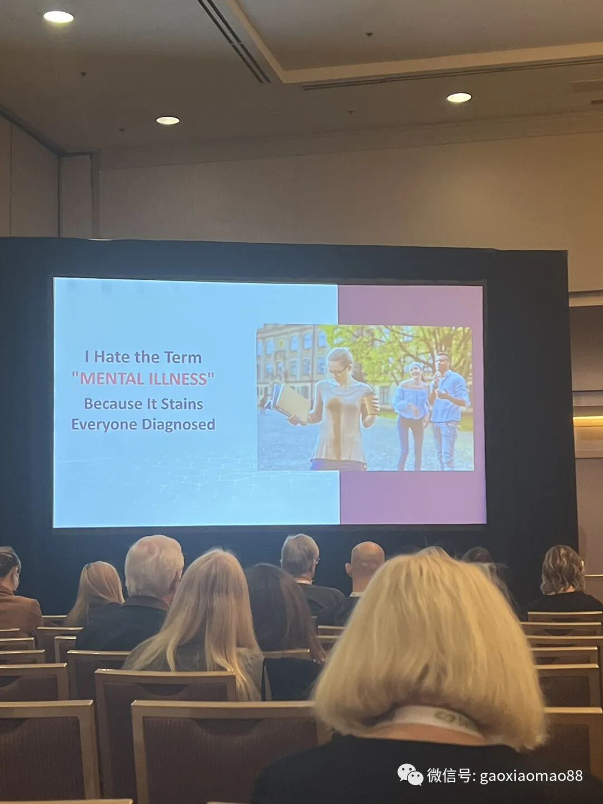
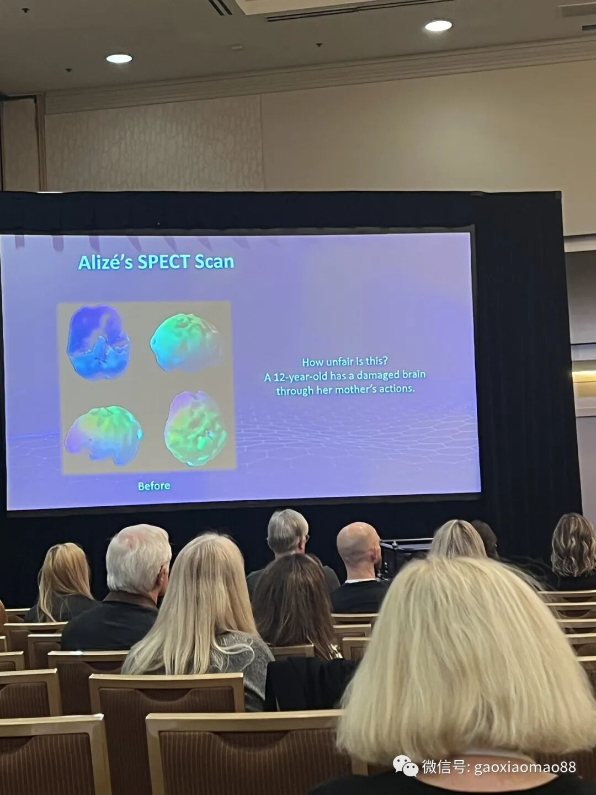
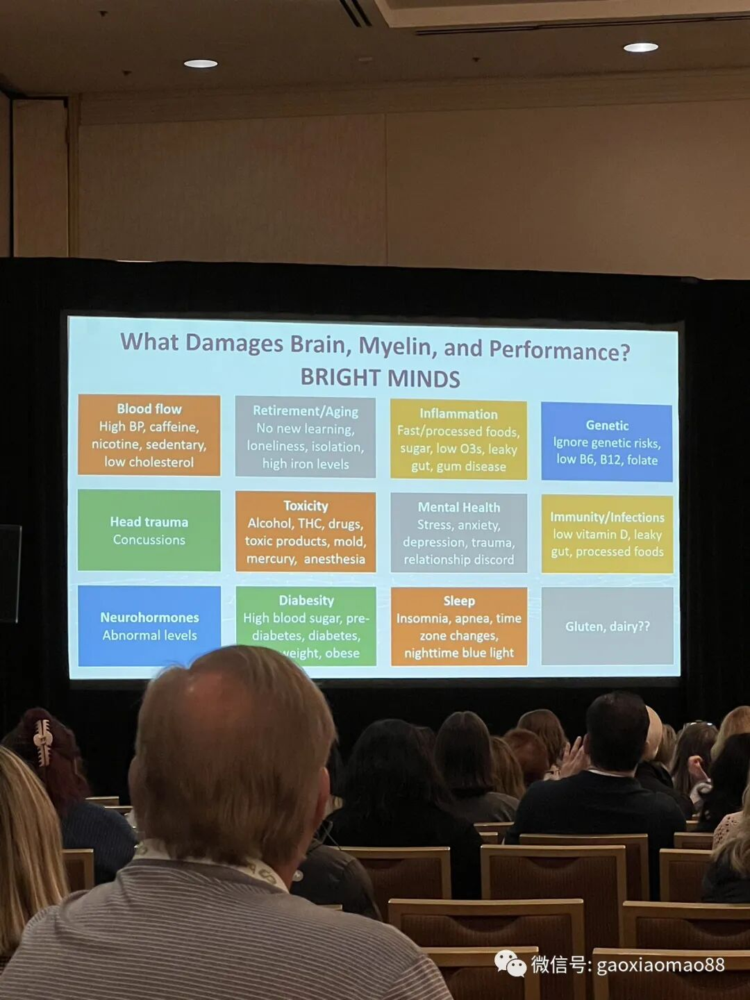
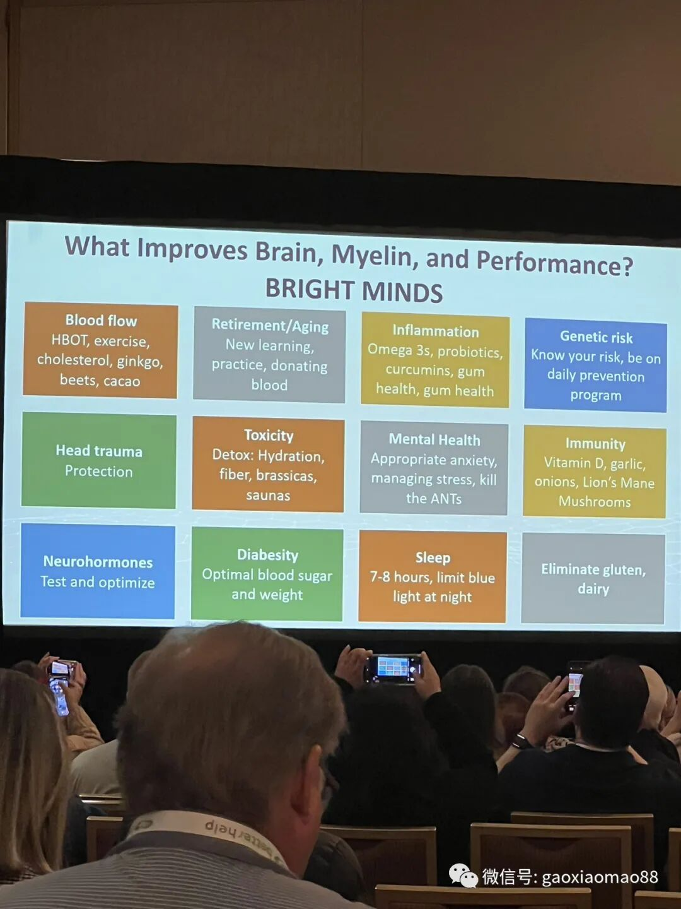
然后上面是针对性的解决方案。
这里面提到有一个是我之前没听说过的，用于治疗心理创伤的方法，叫BLS/EMDR。这种方法是通过图像和声音，引导患者不停地左右动眼，从而让他们把潜意识中的经历调动起来。
然后对于很多的心结，简单的CBT也会很有用。有点类似于reality check。
打比方来说，比如我觉得我无法戒酒。那就可以根据下面这个表单来去一项一项对照着看。
我是戒不了酒吗？可能不一定是。
我是绝对戒不了酒吗？不是。
我觉得我戒不了酒，这个事情让我感觉如何呢？会让我觉得我的自控力很差，自己很无能，很难受。
我觉得我戒不了酒，这会让我有怎样的行为呢？我会更加容易喝酒。
这个行为的结果是什么呢？我会戒不了酒。
如果我没有这个想法，我会感觉如何？会觉得轻松。
我会怎么表现呢？会更容易原谅自己，也不会那么有压力，更容易保持健康。
结果会如何？我可能反而更容易不需要喝酒了。
我的negative的想法的反面是什么？我可以戒掉酒。
这个想法是真实的吗？如果有合理的计划，这是完全可以做到的。
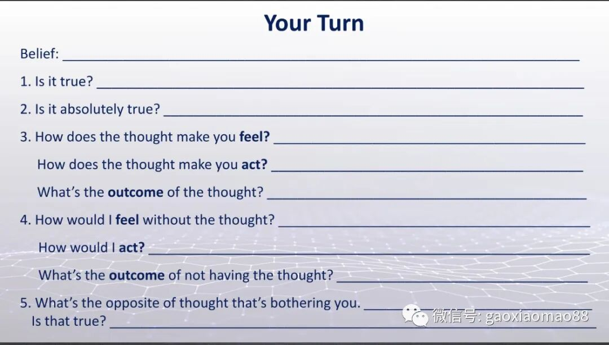
Gabor Mate：所有的心理疾病症状其实都是人对病态环境的应对
感觉Gabor和Amen take了一个完全不一样的角度。
前面提到的Amen强调大脑的健康，并且用大脑成像技术进行辅助。
而Gabor则强调环境对人病症的影响。他强调不管是ptsd，adhd，基本上都来自于环境中的诱因，比如各种生活中的压力，与人之间的关系。
他特别强调了人在生活中有很多时候，如果沿着通常的轨道，会很难说no。这些难以说no的时候，其实都是一种对自己的委屈，也会造成很多病症。
而这些无法说no的人，一旦改变自己，变得更容易说no以后，病症会好很多。
他提到人有一些基本的需求，人需要attachment，需要无条件的爱，需要玩乐的自由，需要。当这些需求无法被满足的时候，病症就出现了。
我们在临床上有的时候会发现有某些基因的人，更容易得某些心理疾病。他认为那些基因可能本身并不是致病的基因，可能只是让那些人对情绪的感受能力更强。这样他们碰到开心的事情的时候会感觉更开心，但是当糟糕事情出现的时候，他们也更容易得病。即错的不是人，而是环境。
我觉得总体来说Gabor的体系并没有给出很多的solution。
他有给出一些建议，比如：
当自己觉得不好的时候，问自己：
How am i not being authentic?
What stress did i take on？
然后根据这些问题的答案，去直面环境中的问题本身，而不是让自己的身体为自己承受那些环境中的错误。
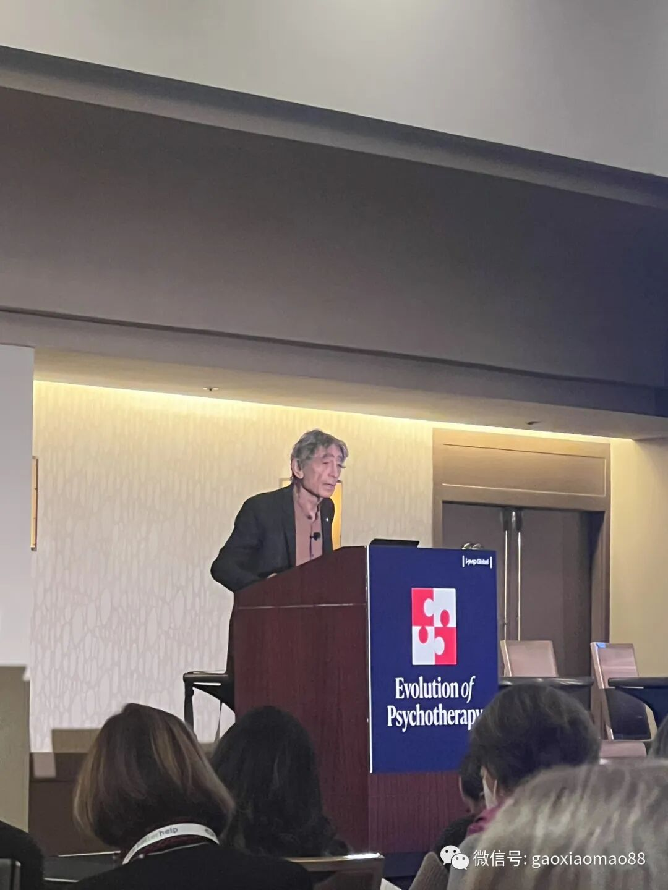
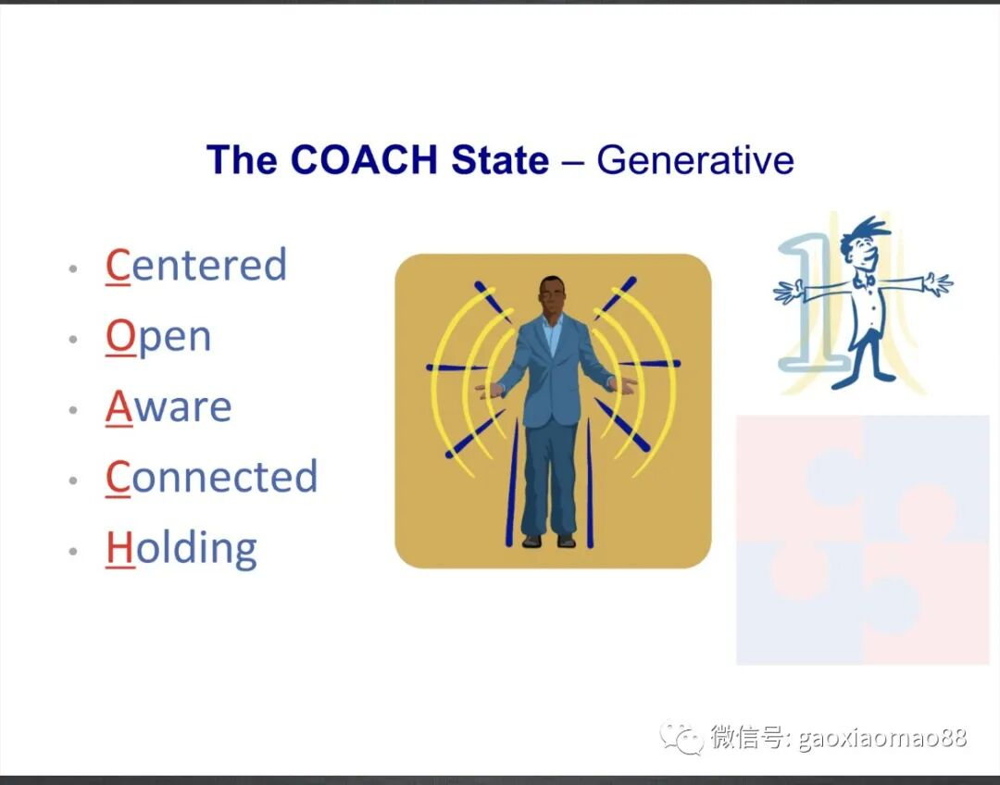
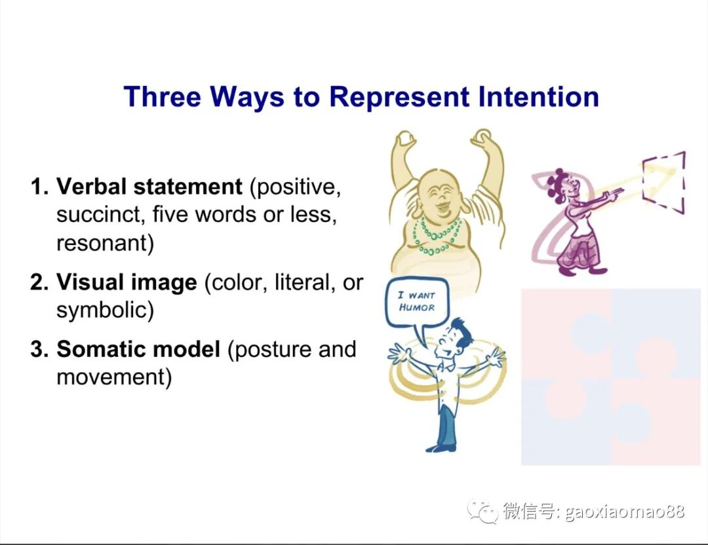
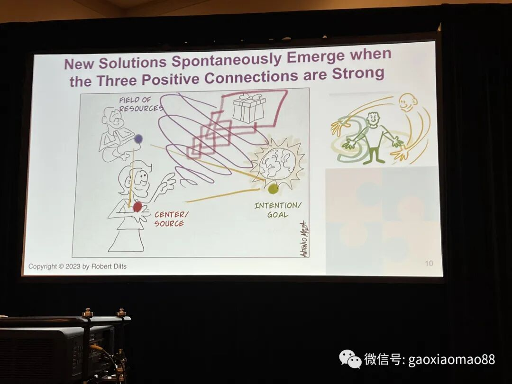
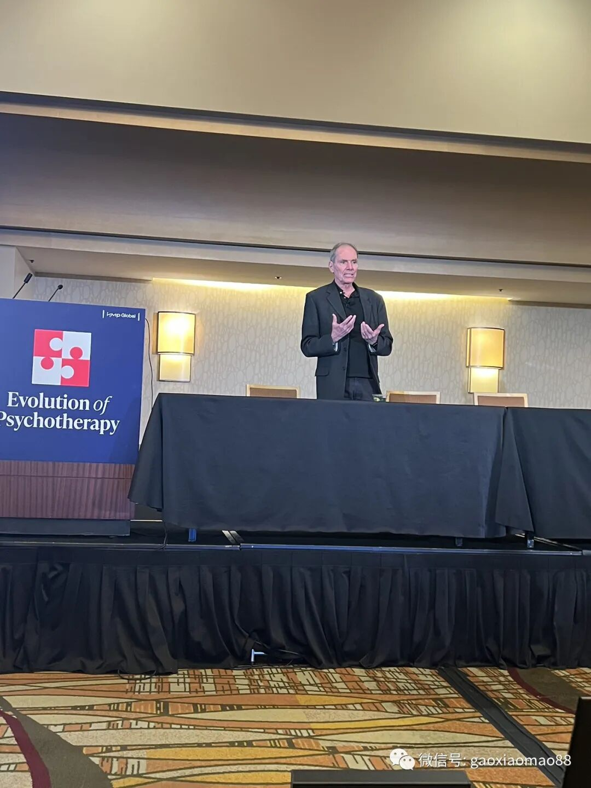
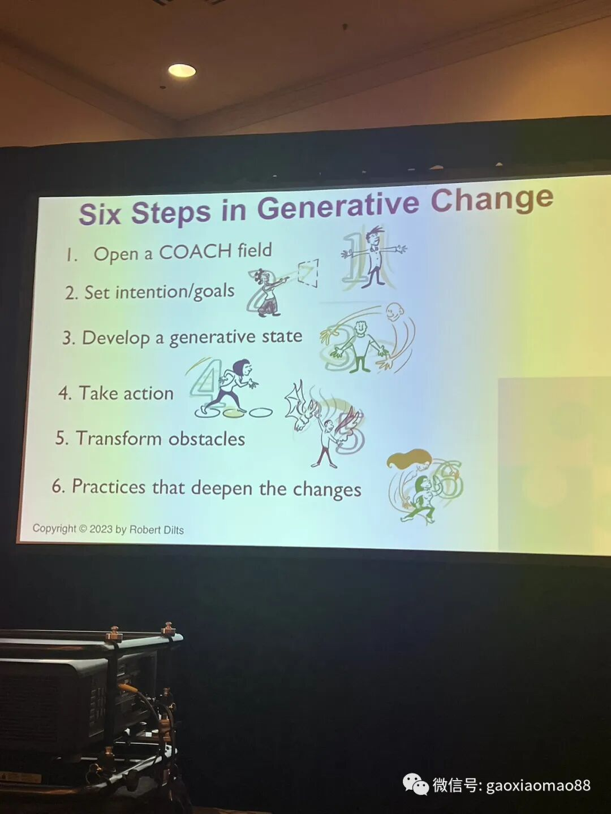
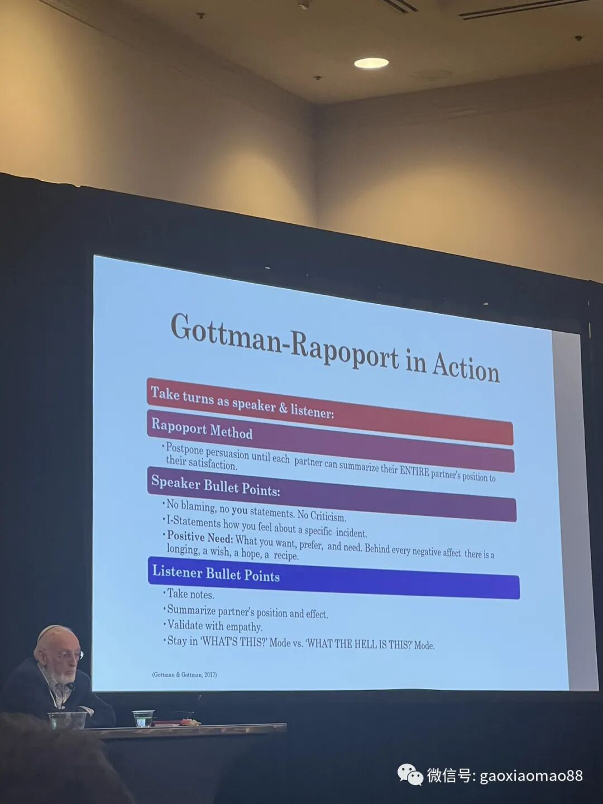
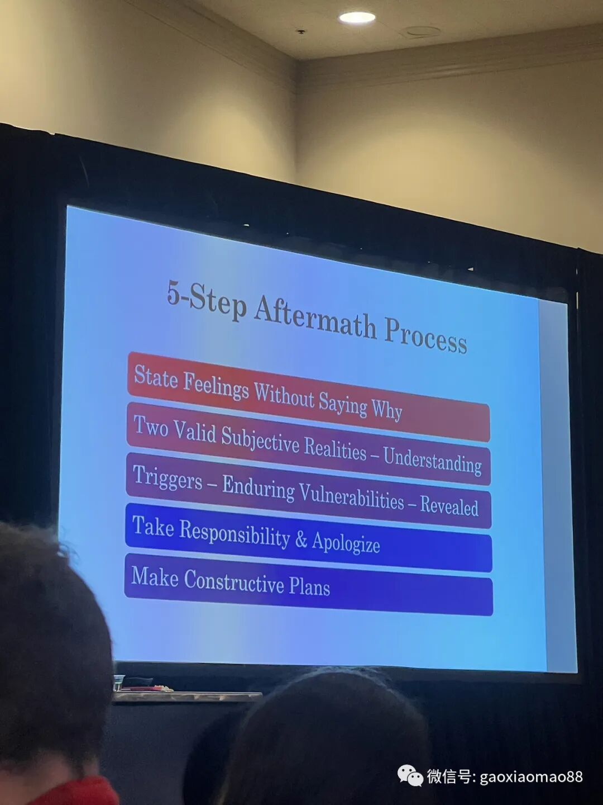